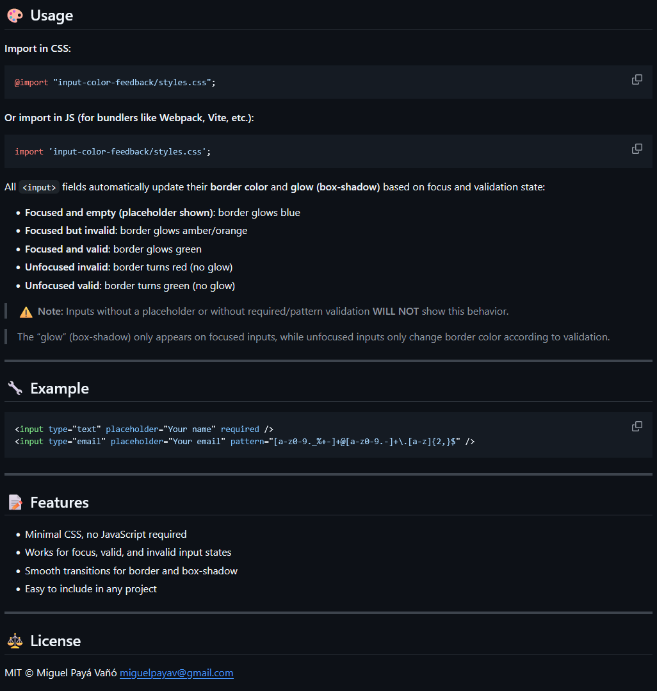
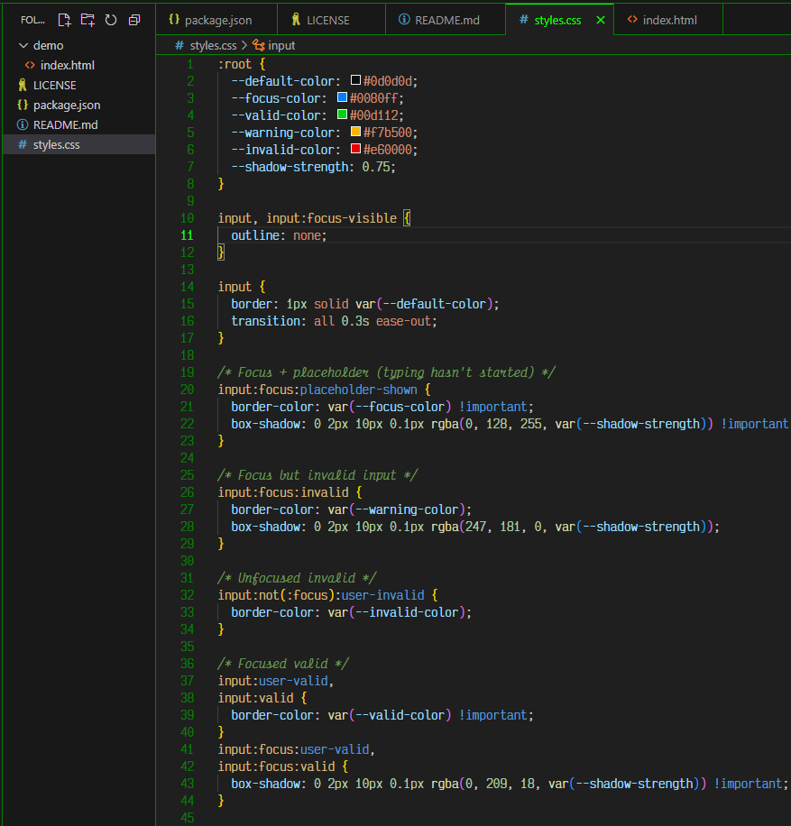
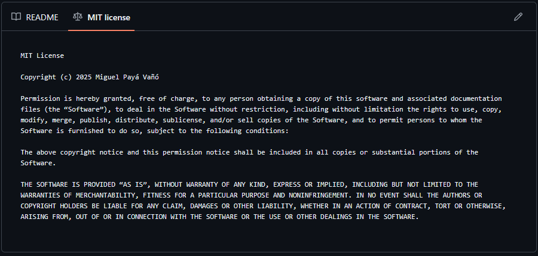

Input Color Feedback
Una pequeña utilidad CSS que escribí y publiqué en npm. La sueltas en cualquier proyecto y todos los inputs de formulario empiezan a dar feedback de color, resplandor e icono en vivo a medida que el usuario escribe —azul al enfocar, verde cuando es válido, ámbar cuando no. Sin JavaScript, sin dependencias y sin tocar el marcado —accesible de serie y ~0,97 KB.



Resumen
Input Color Feedback es un pequeño paquete de código abierto que escribí y publiqué en npm. Hace una sola cosa, y la hace bien: consigue que los inputs de formulario se sientan vivos. En cuanto un campo recibe el foco, brilla; y a medida que el usuario escribe, el borde cambia de color para decirle —sin una sola palabra de texto— si lo que ha introducido ya es válido o no.
Empezó como un fragmento que reescribía en cada formulario que construía. En lugar de copiarlo y pegarlo para siempre, lo convertí en una única hoja de estilos, lo documenté, le puse una licencia MIT y lo publiqué en npm para que cualquiera (yo incluido en el futuro) pueda añadirlo con un solo import.
La idea: un semáforo para los formularios
Todo se apoya en un lenguaje visual que ya habla todo el mundo: el semáforo. Verde significa bien, ámbar significa todavía no, rojo significa que hay un problema. En el fondo el paquete no es más que eso: la validación nativa de formularios, mapeada sobre unos colores que nadie tiene que aprender.
Para quien desarrolla es un pequeño estándar que se puede compartir —lo sueltas y todos los formularios de un proyecto (o de varios) hablan el mismo dialecto, en lugar de que cada uno reinvente su propio estilo de validación. Para quien lo usa es una forma coherente y sin palabras de leer el estado del campo que está rellenando. Ese era todo el objetivo aquí: coger un patrón que reescribía una y otra vez y compartir la parte que de verdad creo que ayuda a ambas partes.
Cómo funciona
Cada <input> transiciona su color de borde, su
resplandor (box-shadow) y —desde la v2.2.0— un pequeño icono de estado
según su estado de foco y validación. Hay seis estados, y cada uno le dice algo distinto al usuario:
- Sin foco y vacío (el estado por defecto): un borde gris neutro, sin resplandor —el punto de partida sereno antes de que se haya tocado el campo.
- Enfocado y vacío (con el placeholder aún visible): el borde brilla en azul: «estás aquí, adelante».
- Enfocado pero inválido: el borde brilla en ámbar y aparece un icono de triángulo de advertencia: «sigue, aún no está del todo».
- Enfocado y válido: el borde brilla en verde con una marca de verificación: «eso funciona».
- Sin foco e inválido: el borde se vuelve rojo sólido con una cruz de error, sin resplandor —un marcador de error sereno una vez que has pasado de largo.
- Sin foco y válido: el borde se queda verde con una marca de verificación, sin resplandor: confirmado en silencio.
El resplandor sólo aparece en el campo enfocado, así que un formulario largo nunca se ilumina como un árbol de Navidad —tu vista se dirige exactamente al input en el que estás trabajando.
Los iconos son más que un adorno: significan que el estado se señala con algo más que el color. Se
pintan directamente en el propio background-image del input como SVG en línea (data-URI),
así que no hay marcado extra ni petición de red —viajan dentro de la propia hoja de
estilos. Aparecen en los inputs de una sola línea de tipo texto (text,
email, password, tel, url y un
<input> sin tipo), que reservan un poco de relleno a la derecha para que el icono
nunca solape el valor; los tipos que traen su propia UI en el borde derecho —checkbox, radio, range,
color, date, number, search— se quedan sólo con el feedback del borde.
CSS puro, cero JavaScript
Toda la librería es una hoja de estilos corta y ni una sola línea de JavaScript. Toda la lógica vive
en selectores CSS modernos que el navegador ya evalúa gratis:
:focus, :placeholder-shown, :valid/:invalid y los
dirigidos por el usuario :user-valid/:user-invalid —estos dos últimos son
los que evitan que la página le grite «inválido» a un campo vacío que el usuario ni siquiera ha
alcanzado todavía.
Como no hay script, no hay nada que inicializar, nada que empaquetar, ningún coste en tiempo de
ejecución y nada que pueda romper el comportamiento existente de un formulario. Las transiciones de
border-color y box-shadow se suavizan a lo largo de 0,15 s —ágil, y en línea con los tiempos habituales de UI (antes eran 0,3 s)— y esa duración es en sí una
propiedad personalizada --transition-duration que puedes reajustar o poner a
0 para desactivar la animación. Bajo prefers-reduced-motion se desactiva por
completo.
Accesible de serie
El feedback de color sólo sirve si todo el mundo puede leerlo, así que el paquete integra la
accesibilidad en lugar de dejarla en manos de quien lo usa —y, desde la v2.2.0, lo hace de forma
automática sobre un <input> pelado, sin JavaScript, sin clases y sin marcado extra:
- El color no es la única señal (WCAG 1.4.1). Cada estado que se juzga dibuja además un icono —triángulo de advertencia, cruz de error o marca de verificación— para que una persona con daltonismo no dependa sólo del tono para distinguir el ámbar del verde y del rojo.
-
Bordes que de verdad contrastan
(WCAG 1.4.11).
Los colores de estado están afinados para superar el umbral de contraste de 3:1 para elementos no
textuales sobre los fondos con los que se prueba —en torno a 3:1 para el verde de «válido» y el
naranja de «advertencia» sobre blanco, y la paleta oscura lo supera sobre
#121212. -
Respeta
prefers-reduced-motion. Las transiciones de borde y resplandor se apagan para quien pide menos movimiento. - Mantiene un anillo de foco en modo forced-colors / alto contraste, donde el resplandor (una box-shadow) no se puede pintar.
Un límite honesto: los iconos son background-images decorativos, así que no se
anuncian a la tecnología de asistencia, y el paquete deliberadamente no incluye texto de error para
lectores de pantalla. En un formulario real, sigue acompañando los estados de un mensaje visible
enlazado con aria-describedby para que quienes usan lector de pantalla también reciban
las palabras.
Personalizable por diseño
Cada color es una propiedad personalizada de CSS declarada en :root, así que personalizar
el tema es cuestión de sobrescribir un puñado de variables —sin Sass, sin paso de build y sin hacer un
fork:
--default-color— el borde en reposo.--focus-color— el resplandor azul del foco.--valid-color— el estado verde de «válido».--warning-color— el estado ámbar de «enfocado pero inválido».--invalid-color— el estado rojo de «dejado inválido».--shadow-strength— la intensidad del resplandor, mezclada en la sombra concolor-mix().--transition-duration— la velocidad de la transición de borde y resplandor (p. ej.0.15s;0la desactiva).
Apunta esas variables a la paleta de tu marca y el feedback hereda tu lenguaje de diseño de forma automática.
Instalación y uso
Se instala con npm install input-color-feedback (o yarn add input-color-feedback)
y luego importas la hoja de estilos —bien desde CSS con
@import "input-color-feedback/styles.css"; o, con un bundler como Vite o Webpack, desde
JavaScript con import 'input-color-feedback/styles.css';.
Esa es toda la configuración. No hay componentes que cablear ni clases que añadir —el estilo se apoya
en la validación nativa de HTML, de modo que se activa en cuanto un input tiene un
placeholder y una regla de validación como required, pattern o
minlength. Los inputs sin eso no reaccionan, y es a propósito.
Claro y oscuro, de fábrica
La paleta por defecto está afinada para interfaces oscuras —como este sitio, y como
Biglo, la aplicación en la que nació. Desde la v2.1.0 ya no se
queda ahí: sobre un fondo claro, los dos colores que de otro modo no superarían el umbral de
contraste de las WCAG —el verde de «válido» y el ámbar de «enfocado pero inválido»— se cambian
automáticamente para seguir el color-scheme declarado de tu página mediante la función
CSS light-dark(): el verde se oscurece y el ámbar vira hacia el naranja para que ambos
superen el 3:1 sobre blanco. Si no declaras nada, los navegadores renderizan en claro, así que se
aplica la paleta clara; los navegadores sin light-dark() recurren a la paleta oscura.
Sin configurar nada.
Y como cada color sigue siendo una variable CSS, puedes re-tematizarlo para cualquier diseño —que es exactamente lo que hice en el sitio de Abogada de la Tierra: limité las variables de la librería al formulario de contacto, mantuve el color de borde en reposo de la propia página y ajusté la paleta para que se asiente cómodamente sobre un fondo crema.
Huella y benchmarks
Toda la librería son ~0,97 KB min+gzip, con cero dependencias y cero JavaScript en tiempo de ejecución. Medido frente a diez paquetes comparables (Bundlephobia para los suyos, un minificador local para el nuestro), eso es aproximadamente 13× más pequeño que la mediana —y más pequeño que el validador de JavaScript dedicado más pequeño del sector.
Quería que las afirmaciones de rendimiento se pudieran comprobar en lugar de sólo asegurarlas, así
que el repo incluye un BENCHMARKS.md y un banco de pruebas de un solo comando —Playwright
manejando un Chromium real— que cualquiera puede reejecutar en su propio hardware. Su hallazgo
principal: para el feedback en vivo, campo a campo, este paquete añade 0 ms de scripting de
interacción y un coste de inicialización igual al de una página pelada, mientras que la vía
en vivo realista de Bootstrap (JavaScript alternando clases de validación) añade ~8 ms encima de
~16 KB de framework, y los validadores JS independientes ~15 ms. Dejando aparte la animación, incluso
recalcula un poco más ligero que Bootstrap —sencillamente hay menos hoja de estilos que el navegador
tenga que emparejar.
La lectura honesta: esto hace una cosa —feedback visual de estado accesible— por casi cero bytes y sin script. Un framework completo como Bootstrap puede igualar la accesibilidad, pero sólo con sus bytes, sus clases, su marcado y (para feedback realmente en vivo) su JavaScript. Lo que sí aporta por encima de este paquete es el texto de error para lectores de pantalla que este deja deliberadamente en tus manos. Ambos, eso sí, delegan la comprobación de las restricciones en el navegador.
Limitaciones y qué viene después
Prefiero ser claro sobre dónde se queda corto:
-
Necesita campos con restricciones. Como se apoya en la validación nativa, un input
sólo reacciona si realmente tiene una regla —un
placeholdermás algo comorequired,patternominlength. Un input sin restricciones es siempre:valid, así que se quedaría verde desde el primer instante. -
Pero puedes sortearlo. En
Abogada de la Tierra combiné el paquete con un
formulario
novalidatey un pequeño validador en JS que activa una clase.is-invalidpara los errores al enviar, además de un modificador--optionalpara que los campos opcionales vacíos se queden neutros en lugar de ponerse verdes. El CSS aporta la sensación en vivo; unas pocas líneas de JS cubren los casos que la validación nativa no sabe expresar. -
Aún sin texto de error para lectores de pantalla. La v2.2.0 cerró aquí la mayor
brecha: cada estado que se juzga lleva ahora un icono, así que el significado ya no depende sólo del
tono (empezó como mi implementación personal para Biglo y ha
crecido bastante más allá de eso). Lo que todavía no incluye es un mensaje anunciado a la tecnología
de asistencia, así que en formularios reales acompáñalo de tu propio texto con
aria-describedby.
Hacia dónde va —orientaciones, no promesas, y sin fechas fijas:
-
Feedback sin marcado obligatorio. Hoy un campo sólo reacciona si lleva un
placeholdery una restricción; una versión futura pretende levantar eso, para que un<input>pelado pueda mostrar los mismos seis estados sin atributos extra. - Colores de texto a juego (en exploración) — tokens opcionales para que un mensaje de ayuda o de error pueda replicar el color de estado de su input. El texto exige más contraste que los bordes (4,5:1 frente a 3:1), así que antes necesita su propia paleta afinada.
Estado
Publicado y disponible en npm como input-color-feedback, con el código en GitHub bajo licencia MIT. Actualmente va por la versión 2.2.0 —la que añadió la capa de iconos de accesibilidad— pequeño, estable y de uso libre para cualquiera.